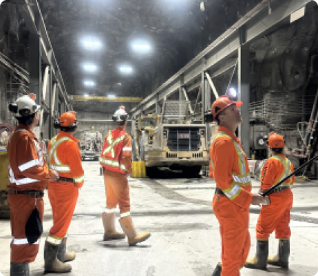
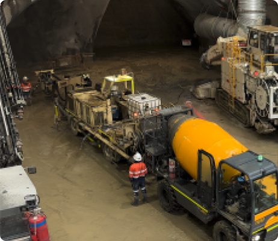
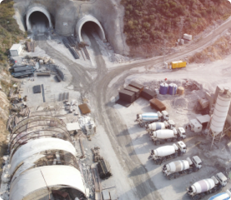
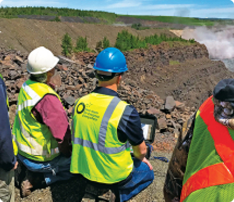
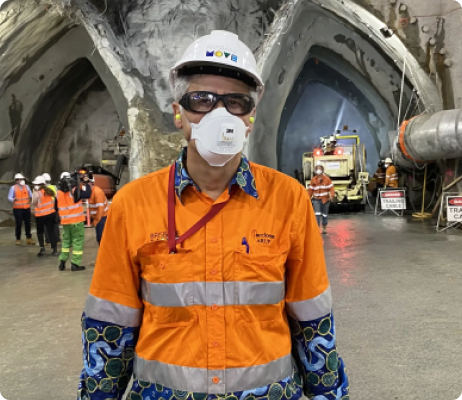
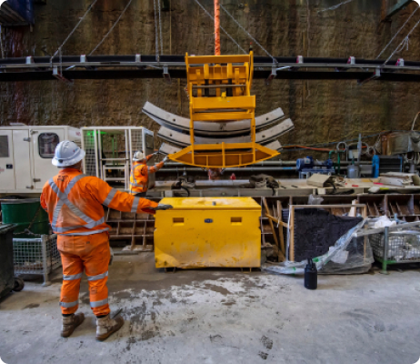
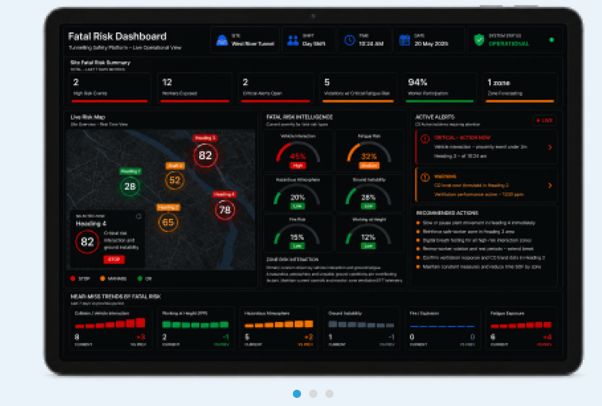
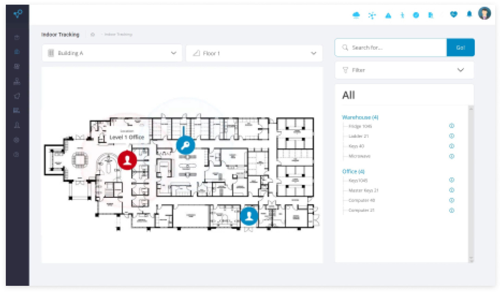

Operational Digital Twin
A Live Operational Understanding Of The Operation
The Operational Digital Twin creates a live operational representation of the environment by connecting workforce activity, equipment, vehicles, environmental conditions, production systems and operational technologies into a shared operational view.
One View Across
The Entire Operation
The iottag Operational Intelligence Platform creates a live operational view of your site.
By connecting workforce, vehicles, equipment, environmental monitoring, production systems and operational technologies, organisations gain visibility into what is happening, where it is happening and where attention is required.
Whether managing daily site operations or overseeing performance across multiple projects and sites, the platform provides a shared operational understanding that supports better decisions at every level of the organisation.
Workforce Visibility
Gain real-time visibility of personnel, workforce activity and site-wide accountability.
Monitor workforce location, compliance status, interactions and emergency readiness through a shared operational view.
Key Insights

Vehicle Intelligence
Understand how vehicles move, interact and influence operational performance across the site.
Monitor traffic flow, congestion, utilisation and interaction risks in real time.
Key Insights

Asset Visibility
Know where critical assets are, how they are performing and what requires attention.
Track equipment, tools and materials while monitoring utilisation, availability and operational performance.
Key Insights

Environmental Monitoring
Understand changing environmental conditions and their impact on operations.
Monitor air quality, ventilation performance, heat stress and hazardous conditions in real time.
Key Insights

Emergency Response
Identify emerging risk conditions before they escalate into serious incidents.
The platform continuously evaluates operational conditions across workforce activity, vehicle interactions, environmental factors and site operations to provide earlier visibility into developing exposure.
Key Insights

Executive Visibility
Improve operational performance through greater visibility across production activities, equipment utilisation and operational bottlenecks.
Monitor production systems alongside workforce activity, equipment performance and site conditions to better understand production drivers and identify opportunities for improvement.
Key Insights

Operational Coordination
Bring workforce, vehicles, equipment, environment, safety and production information into a shared operational view.
Transform fragmented operational information into actionable intelligence that supports better coordination, faster decision-making and stronger operational performance.
Key Insights

The science behind better operational decisions
iottag is an Operational Intelligence company built on engineering, data science and real-world operational expertise.
A central viewpoint to
manage all of your assets
The Atlas platform revolutionises the visualisation of operational data to make it more insightful than ever.
When connected to next-generation asset tags we unlock uninterrupted visibility across any environment.
Now you can track your assets moving from the office, to the road and into the field, all from our cloud platform.
Rich data modelling tools provide you with unmatched operational insight and a competitive edge.

See Atlas Software
Operational Understanding Meets Engineering Excellence
By combining engineering, data science, operational technology and field expertise, iottag helps organisations solve complex operational challenges with confidence.
Why iottag